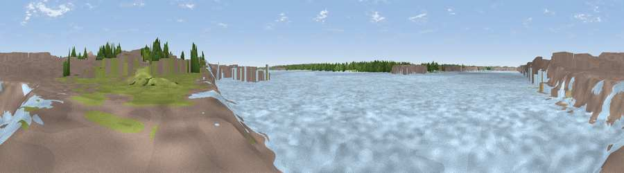

Viewpoint near Southampton
#45858 in England · top 97% of its area beats it · near SouthamptonThe view, rendered

A 360° render of this exact spot computed from the terrain model, tree cover and land cover — summer colours, afternoon light, calibrated against photographs of famous viewpoints. Real trees, hedges and buildings will differ in detail.
The panorama
Grey silhouette: terrain skyline in each direction (720 bearings, Earth curvature and refraction included). Dashed green: skyline with trees (+15 m) and buildings (+8 m) as obstacles. Blue strip: how far the ground is visible on each bearing.
Where the view opens
Wedge length = distance to the farthest visible ground on that bearing (vegetation-aware). Rings at 10, 25 and 50 km.
What fills the view
61% water · 26% built-up · 7% woodland · 5% grassland
Angular shares of the visible panorama (visual magnitude), not map area. Landscape diversity 0.44 (0–1 Shannon).
Key numbers
More beautiful places nearby
The staircase of upgrades: each row has a higher view potential than everything closer. Driving times are estimates from straight-line distance, calibrated against real road routing — check an actual route before setting out.
| Place | Direction | Drive | Score |
|---|---|---|---|
| Viewpoint near Southampton | E · 2 km | ~5 min | 18.4 |
| Windmoor Hill | SW · 3 km | ~7 min | 25.4 |
| Viewpoint near West End | NE · 5 km | ~10 min | 38.3 |
| Viewpoint near Lower Swanwick | E · 8 km | ~15 min | 42.4 |
| Viewpoint near Upton | NNW · 8 km | ~17 min | 46.3 |
| Cockscomb Hill | NNE · 15 km | ~27 min | 50.4 |
| Violet Hill | N · 16 km | ~29 min | 55.7 |
| Viewpoint near Sparsholt | N · 18 km | ~31 min | 66.9 |
50.89800, -1.41115 · source: osm viewpoint · position refined by local search. Computed location — check access rights before visiting.